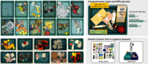
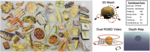
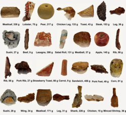

Publications
Datasets
MetaGraspNet

View on GitHub
MetaFood3D Dataset

Access Dataset
NutritionVerse 3D

View on Kaggle
2024
-
D. Mao, Y. Chen, Y. Wu, M. Gilles, and A. Wong, “Rethinking resource competition in multi-task learning: From shared parameters to shared representation,” IEEE Access, pp. 1–1, 2024. doi: 10.1109/ACCESS.2024.3429281.
-
X. Ni, P. W. Fieguth, Z. Ma, B. Shi, Y. Qiu, Y. Chen, and H. Liu, “Superpixel-guided multi-type rail segmentation via contextual information aggregation,” IEEE Transactions on Intelligent Transportation Systems, pp. 1–15, 2024. doi: 10.1109/TITS.2024.3397509.
-
B. Balaji, J. Bright, S. Rambhatla, Y. Chen, A. Wong, J. S. Zelek, and D. A. Clausi, “Domain-guided Masked Autoencoders for Unique Player Identification,” in Proceedings of the Conference on Robots and Vision, https://crv.pubpub.org/pub/4ekemco5, May 2024.
-
J. Bright, B. Balaji, Y. Chen, D. A Clausi, and J. S. Zelek, “Pitchernet: Powering the moneyball evolution in baseball video analytics,” in Proceedings of the IEEE/CVF Conference on Computer Vision and Pattern Recognition (CVPR) Workshops, Jun. 2024, pp. 3420–3429.
-
J. Bright, B. Balaji, H. Prakash, Y. Chen, D. A. Clausi, and J. S. Zelek, “Distribution and Depth-Aware Transformers for 3d Human Mesh Recovery,” in Proceedings of the Conference on Robots and Vision, https://crv.pubpub.org/pub/f9hwdv89, May 2024.
-
V. Chomko, Y. Chen, D. Clausi, and A. Wong, “Synthetic local data augmentation,” in Proceedings of IEEE 26th International Workshop on Multimedia Signal Processing (MMSP), West Lafayette, Indiana, USA, Oct. 2024.
-
Y. Huang, Y. Chen, and J. Zelek, “Zero-shot monocular motion segmentation in the wild by combining deep learning with geometric motion model fusion,” in Proceedings of the IEEE/CVF Conference on Computer Vision and Pattern Recognition (CVPR) Workshops, 2024, pp. 2733–2743.
-
M. Patel, X. Chen, L. Xu, Y. Chen, K. A. Scott, and D. A. Clausi, “Region-level labels in ice charts can produce pixel-level segmentation for sea ice types,” in Proceedings of 2nd Machine Learning for Remote Sensing (ML4RS) Workshop at ICLR 2024, Vienna, Austria, May 2024.
-
H. Prakash, J. C. Shang, K. M. Nsiempba, Y. Chen, D. A. Clausi, and J. S. Zelek, “Multi Player Tracking in Ice Hockey with Homographic Projections,” in Proceedings of the Conference on Robots and Vision, https://crv.pubpub.org/pub/v4f6w2f7, May 2024.
-
A. Sharma, C. Czarnecki, Y. Chen, P. Xi, L. Xu, and A. Wong, “How much you ate? food portion estimation on spoons,” in Proceedings of the IEEE/CVF Conference on Computer Vision and Pattern Recognition (CVPR) Workshops, Jun. 2024, pp. 3761–3770.
Abstracts (2024)
-
M. Keller, C.-e. A. Tai, Y. Chen, P. Xi, and A. Wong, “Nutritionverse-direct: Exploring deep neural networks for multitask nutrition prediction from food images,” MetaFood Workshop, CVPR, 2024. url: https://arxiv.org/abs/2405.07814.
-
A. Pathiranage, C. Czarnecki, Y. Chen, P. Xi, L. Xu, and A. Wong, “In the wild ellipse parameter estimation for circular dining plates and bowls,” MetaFood Workshop, CVPR, 2024. url: https://arxiv.org/abs/2405.07121.
-
E. Z. Zeng, Y. Chen, and A. Wong, “Understanding the limitations of diffusion concept algebra through food,” MetaFood Workshop, CVPR, 2024. url: https://arxiv.org/abs/2406.03582.